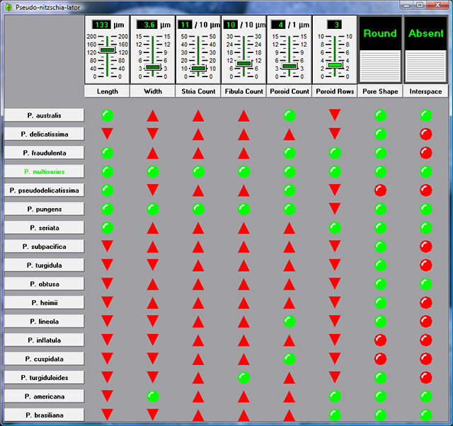
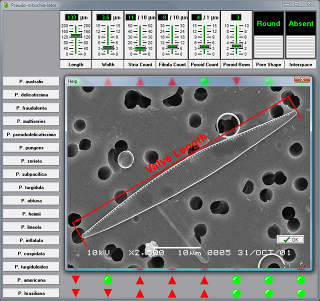

DMF Developed Software: dmfTable
Originally called Pseudo-nitzschia-later, this software was designed as a single purpose interactive program that encapsulated measurements and
features of species from the diatom genus Pseudo-nitzschia commonly found in the coastal waters of the Maritimes.
At times some of the species produce domoic acid, the toxin responsible for amnesic shellfish poisoning.
Pseudo-nitzschia-lator made the task of identifying the species that most closely matched the measurements
and features taken from a valve of an unknown much easier than finding the same information in a printed table.
A match is indicated by a row of (blinking) green lights and a highlighted species name. Measurements from the
unknown that are outside the published range for a species are indicated by upward or downward facing red arrows
(indicating the direction the measurement would need to change to produce a match). In the case of presence/absence features,
a round red light is shown when a feature that should be present is not (or vice versa).

Row and column labels for Pseudo-nitzschia species and measurements/features are buttons that display a help
image when clicked:

With the introduction of many new species of Pseudo-nitzschia into Maritime waters in the last decade, the original
"hard-coded" program was updated to allow rapid changes to the program without recompilation. As an added benefit, the latest version of the
software also gained the ability to serve as a general purpose decision making tool. Configuration of all aspects of both rows and columns
is accomplished through the creation and editing of a plain text file, with no practical limit to the number of rows or
columns (other than computer memory). dmfTable can now be morphed into an interactve version of any data matrix
that can be represented in the form of a truth table.
|